| 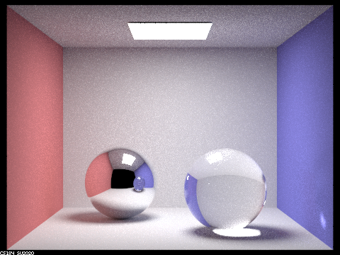 |
Overview
Project 3-2 is a short extension of Project 3-1 and offered us the option of choosing to implement two or more rendering effects out of four. We chose Part 1: Mirror and Glass Materials and Part 4: Depth of Field largely because we thought these two parts were the most visually interesting. Implementing Part 1 involved updating the BSDF functions for Mirror (reflecting light) and Glass (reflecting and refracting light) objects.
Implementing refraction in particular involved Applying Snell’s law $\sin \theta = \eta \cdot \sin \theta$. Implementing the full glass material effect involved estimating the results of the Fresnel equations, which models the ratio between reflection and refraction at a certain point on a glass object.
Depth of Field in Part 4 was implemented by simulating a thin lens between the scene and camera sensor and sampling this lens at random points rather than the traditional pin-hole camera model that we’ve used to render up to this point. Rendering pictures from this part in particular took some experimentation. We found that entering “BVH” mode in the GUI in particular helped us change the camera angle so that we could get the right effect on the dragon.
Although this was a shorter project, the results were just as rewarding as in Project 3-1. As partners, we were far more familiar with the codebase when starting, so we were able to jump to our implementations quicker. What took time on this project wasn’t the coding, but the rendering. Ultimately, it was an exploration of the concepts we covered in class.
Part 1. Mirror and Glass Materials
Show a sequence of six images of scene `CBspheres.dae` rendered with `max_ray_depth` set to 0, 1, 2, 3, 4, 5, and 100. The other settings should be at least 64 samples per pixel and 4 samples per light. Make sure to include all screenshots.

|

|

|
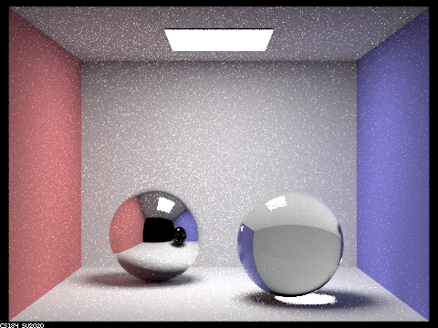
|

|

|

|
Point out the new multibounce effects that appear in each image. Explain how these bounce numbers relate to the particular effects that appear. Make sure to include all screenshots.
When max_ray_depth = 0, we only get zero bounce
illumination, meaning only the area light source is visible. When
max_ray_depth = 1, we get zero bounce illumination and
one bounce illumination (direct illumination). When
max_ray_depth > 1, we get direct illumination and
indirect illumination, so we see the reflected light from the
walls, for instance, fill and color the ceiling, floor, and
shadows. We also get enough bounces for reflection and refraction
of light through the MirrorBSDF and
GlassBSDF. When max_ray_depth = 2, we get
a maximum of 2 bounces. The left sphere has a
MirrorBSDF so it is reflecting light. For instance,
the camera ray hits the left sphere, then bounces in the reflected
direction to the red wall, and then bounces to the area light
source. This path is the reverse direction that the light from the
area light source travels to get to the camera. The sphere on the
right has a GlassBSDF so it is both reflecting and
refracting light based on the Fresnel
equations which we calculate using Schlick's
approximation. With two bounces, we get reflection just as with the
left mirror sphere, so we observe the small specular highlight on the top
of the right glass sphere from direct illumination. However, we don't yet
have refraction because there is not enough bounces. For instance, if the
camera ray hits the right glass sphere, it will refract in the calculated
refraction direction, bounce internally and refract through the other
side of the glass sphere, and hit a wall and not the area light source.
Once we get to max_ray_depth = 3, we have enough bounces for
the light to bounce from the wall to the glass sphere, refract through
twice, and hit the camera. We also get a concentrated pool of light on
the ground underneath the glass ball. When max_ray_depth =
4, we see a patch of light on the blue wall that refracted through
the glass sphere. We also see a concentration of light on the underside of
the glass sphere above the pool of light on the ground beneath it. When
max_ray_depth = 5 and 100, at this sample rate, there are no
new distinct visual effects that appear with each
max_ray_depth increase as there are already enough bounces for
reflection and refraction to occur, and the light in higher and higher
bounces decays.
Part 2. Microfacet Material
Show a screenshot sequence of 4 images of scene `CBdragon_microfacet_au.dae` rendered with $\alpha$ set to 0.005, 0.05, 0.25 and 0.5. The other settings should be at least 128 samples per pixel and 1 samples per light. The number of bounces should be at least 5. Describe the differences between different images. Note that, to change the $\alpha$, just open the .dae file and search for `microfacet`.
Your response goes here.
Show two images of scene `CBbunny_microfacet_cu.dae` rendered using cosine hemisphere sampling (default) and your importance sampling. The sampling rate should be fixed at 64 samples per pixel and 1 samples per light. The number of bounces should be at least 5. Briefly discuss their difference.
Your response goes here.
Show at least one image with some other conductor material, replacing `eta` and `k`. Note that you should look up values for real data rather than modifying them arbitrarily. Tell us what kind of material your parameters correspond to.
Your response goes here.
Part 3. Environment Lightl
Pick one *.exr* file to use for all subparts here. Include a converted *.jpg* of it in your website so we know what map you are using.In a few sentences, explain the ideas behind environment lighting (i.e. why we do it/how it works).
Your response goes here.
Show the *probability_debug.png* file for the *.exr* file you are using, generated using the `save_probability_debug()` helper function after initializing your probability distributions.
Your response goes here.
Use the `bunny_unlit.dae` scene and your environment map *.exr* file and render two pictures, one with uniform sampling and one with importance sampling. Use 4 samples per pixel and 64 samples per light in each. Compare noise levels. Make sure to include all screenshots.
Your response goes here.
Use a different image (if you did part 2, we recommend `bunny_microfacet_cu_unlit.dae`) and your environment map *.exr* file and render two pictures, one with uniform sampling and one with importance sampling. Use 4 samples per pixel and 64 samples per light in each. Compare noise levels. Make sure to include all screenshots.
Your response goes here.
Part 4. Depth of Field
For these subparts, we recommend using a microfacet BSDF scene to show off the cool out of focus effects you can get with depth of field!In a few sentences, explain the differences between a pinhole camera model and a thin-lens camera model.
In a pinhole camera model, there is a single point through which light rays from the scene pass to create an image on the camera sensor. The light rays all converge at this point before hitting the camera sensor, and all elements of the scene are in focus. In a thin lens camera model, there is a single lens in between the scene and the camera sensor through which light rays pass. The light is refracted through the lens and meets at a single point which is in focus. If the light rays coming from an object in the scene converge at a focus point that is on the sensor, the object will be in focus in the image. If the focus point is before after the sensor, the object will be out of focus in the image as the light rays are blurred in a disk. In terms of our pathtracer, in a pinhole camera model, there is no lens for light to travel through. Instead, a camera ray is shot into the scene and the radiance of the scene is reflected back into the sensor, with no refraction occurring, the light traveling in a straight line. With a thin-lens, the image sensor is not only able to receive light from the origin, but from any point across the surface of the thin lens. In our implementation, we are uniformly sampling across different points on the lens
Show a "focus stack" where you focus at 4 visibly different depths through a scene. Make sure to include all screenshots.
All images were rendered with a lens radius of 0.23.
|
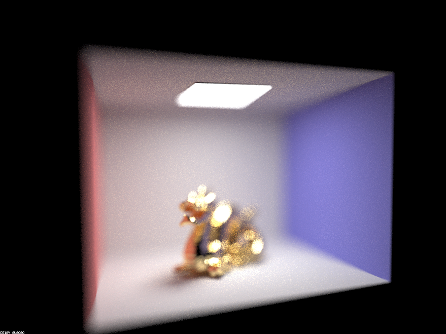
|
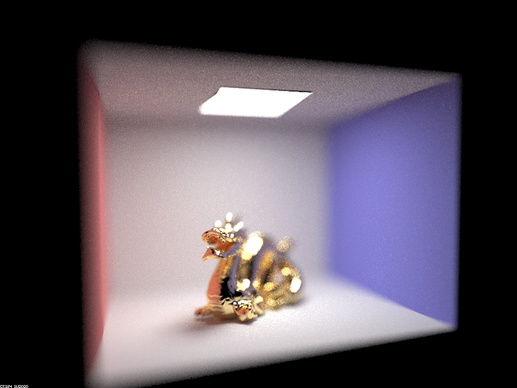
|
|
|
|
|
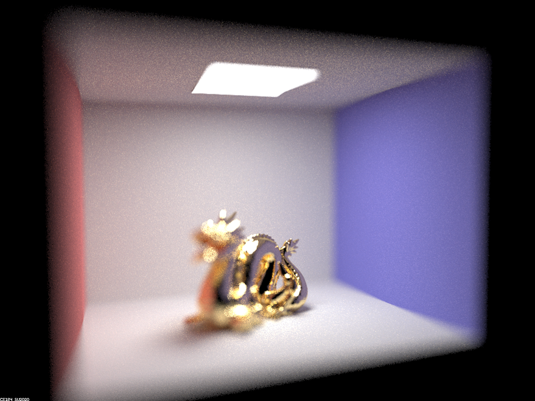
|
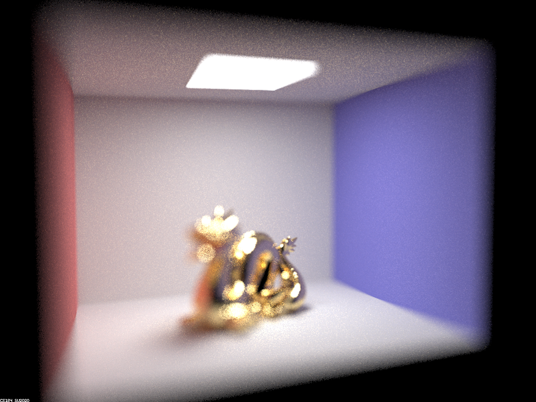
|
Show a sequence of 4 pictures with visibly different aperture sizes, all focused at the same point in a scene. Make sure to include all screenshots.
All images were rendered with a focal distance of 3.3.
|
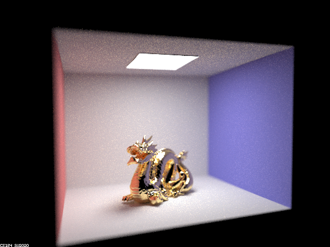
|
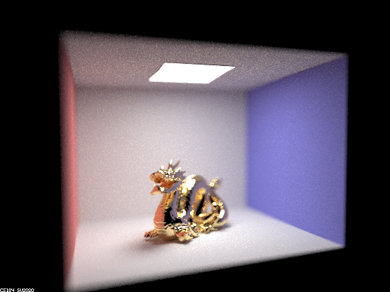
|
|
|
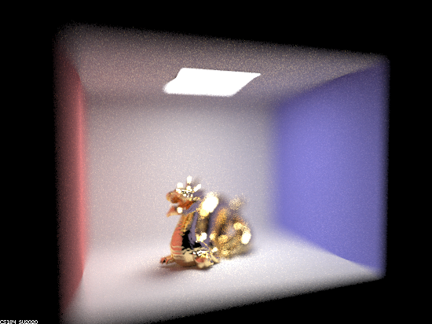
|
|
|
|
|
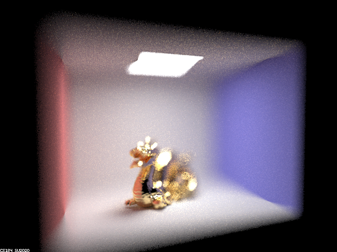
|

|
|
|
|
|
|
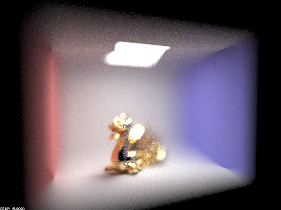
|
|
|